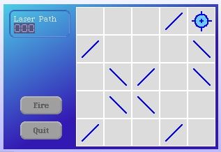

Let's add a counter to show the length of the laser beam path. Add the following instance methods to the LaserGame class.
wrapPanel: aPanel label: aLabel
"wrap a panel in an alignmentMorph and put a label above it"
| column strM |
column := AlignmentMorph newColumn
wrapCentering: #topLeft;
cellPositioning: #topLeft;
hResizing: #spaceFill;
vResizing: #shrinkWrap;
borderWidth: 2;
layoutInset: 5;
color: Color transparent;
useRoundedCorners;
borderStyle: (BorderStyle complexAltInset width: 2).
column addMorph: aPanel.
strM := StringMorph contents: aLabel.
strM color: Color veryVeryLightGray.
column addMorph: strM.
^ column
makeLaserPathCounterMorph
| count |
count := LedMorph new
digits: 3;
extent: 3 * 10 @ 15;
setBalloonText: ''.
count color: (Color r: 0.674 g: 0.674 b: 0.96).
count name: 'laserPath'.
^ self wrapPanel: count label: 'Laser Path'
addCountersToPanel: panel
panel
addMorph: self makeLaserPathCounterMorph
fullFrame: (LayoutFrame
fractions: (0 @ 0 corner: 1 @ 0)
offsets: (4 @ 4 corner: -8 @ 44))
Now we add the new counters by modifying the #makeControlPanelMorph method.
makeControlPanelMorph
| panel |
panel := RectangleMorph new borderWidth: 0;
color: Color transparent;
layoutPolicy: ProportionalLayout new.
self addButtonsToPanel: panel.
self addCountersToPanel: panel.
^panel
Open up our LaserGame morph again and see the new panel.
Now we want to make the digits change...